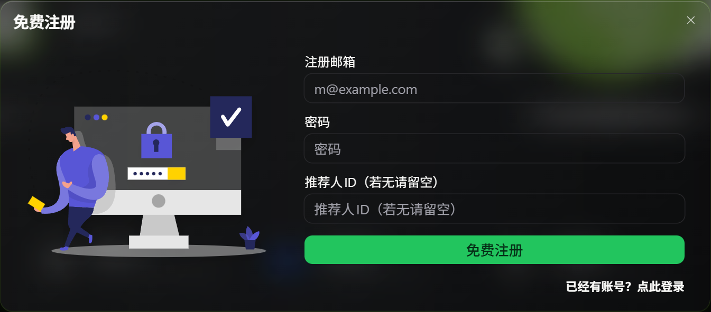
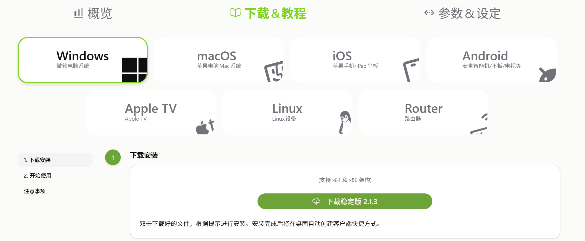
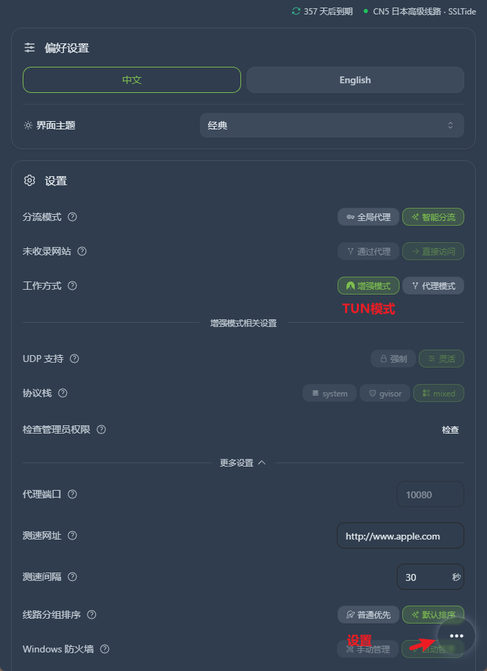
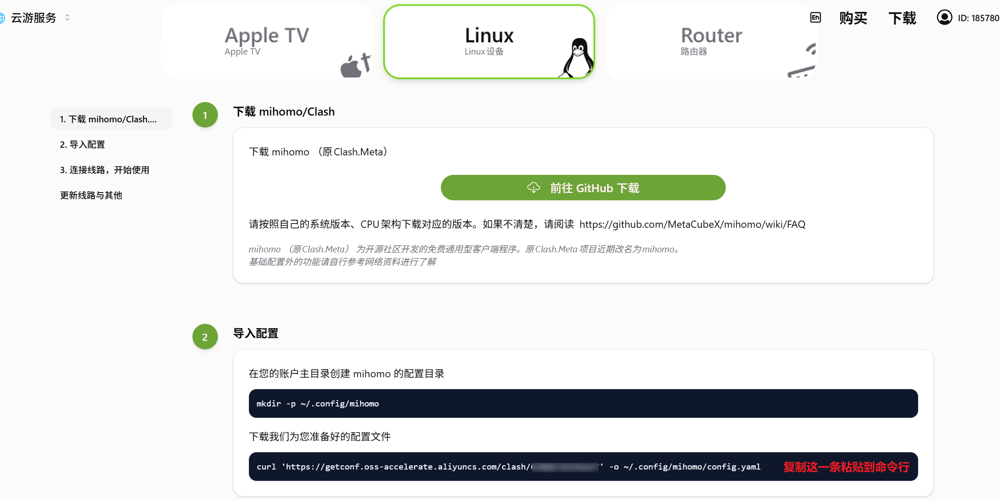
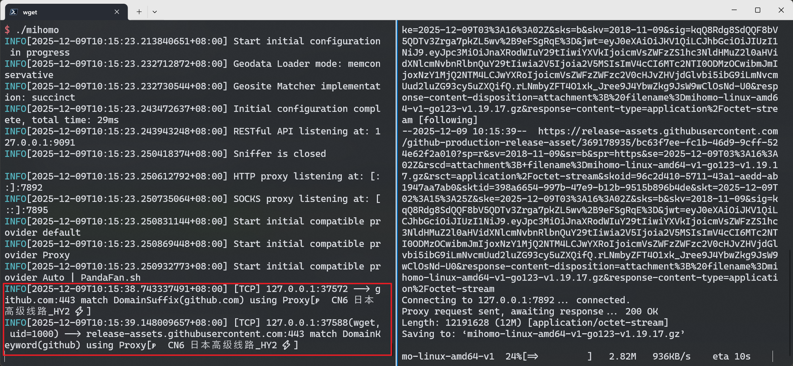

作为一个科研人员，免不了需要科学上网，方便获取最新的研究进展。我用的是PandaFan，从2021年11月20日付费开始，已经用了差不多4年。因为价格昂贵（学术套餐5欧/月），因此也相对来说比较稳定。注册地址是https://PandaFan.sh，如果可以，可以填写我的推荐码, 185780, 在你第一次付费的时候，我可以获得10%的佣金。
他们提供了Windows/MacOS平台的官方客户端下载，和其他平台的配置方法。
Windows/MacOS的官方客户端的使用方法比较简单，只需要安装登录即可。之后，我们需要点击右下角的...，选择设置，开启增强模式，也就是TUN模式，也叫做虚拟网卡模式。
如果不开启虚拟网卡，使用Cursor的时候会出现模型不可用的情况

在Linux服务器上，我们可以通过Clash来进行流量转发，提高从GitHub下载数据的速度。
准备好基础配置信息
mkdir -p ~/.config/mihomo
# 复制上面截图的配置文件的地址
curl 'https://getconf.oss-accelerate.aliyuncs.com/clash/你的/配置文件' -o ~/.config/mihomo/config.yaml
# 下载geoip
curl https://r2.dlbun.com/panda/dl/mmdb/geoip-jan-8.metadb -o ~/.config/mihomo/geoip.metadb从https://github.com/MetaCubeX/mihomo/releases获取clash的下载地址。
# 如果下载不成功，可以本地上传
wget https://github.com/MetaCubeX/mihomo/releases/download/v1.19.17/mihomo-linux-amd64-v1-go123-v1.19.17.gz
# 解压缩
gunzip mihomo-linux-amd64-v1-go123-v1.19.17.gz
mv mihomo-linux-amd64-* mihomo
chmod +x mihomo
./mihomo运行的时候如果出现如下错误，说明服务器上的7890和7891端口被占用了，需要用vim或者nano编辑配置文件，也就是 ~/.config/mihomo/config.yaml，将最开头的7890和7891改成其他的，例如7892,7893
ERRO[2025-12-09T10:04:15.982104810+08:00] Start HTTP server error: listen tcp :7890: bind: address already in use
ERRO[2025-12-09T10:04:15.982138157+08:00] Start HTTP server error: listen tcp :7890: bind: address already in use
INFO[2025-12-09T10:04:15.982390708+08:00] SOCKS proxy listening at: [::]:7891后续就可以通过如下代码，设置http_proxy/https_proxy，来进行流量转发。注意，我用的是7892，这是因为我的7890被用了
export http_proxy=http://127.0.0.1:7892
export https_proxy=http://127.0.0.1:7892下载示意图
 RETURN_TO_BLOG_INDEX